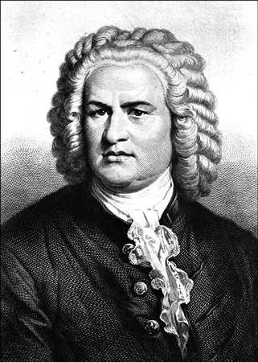

<div class="comp-container">
  <div class="row">
    <div class="col-sm-6 jumbotron" style="text-align: center;">
      <h3>Johann Sebastian Bach</h3>
      <figure class="center-block">
        
        <figcaption><a href="https://upload.wikimedia.org/wikipedia/commons/4/43/JSSBAACH.jpg">Source: Wikimedia</a></figcaption>
      </figure>
    </div>
    <div class="col-sm-4 jumbotron" style="margin: 0 5%;">
      <p>
        Johann Sebastian Bach was a renowned German composer who lived from 1685 to 1750. His work is the most well known from the late Baroque period.
        Bach was mainly known as an organist in his time, though his orchestral compositions have become his notable works in modern times. He also
        created keyboard music which was well received. Johann Sebastian Bach's name is synonymous with classical music as much as other names such as Beethoven.
      </p>
    </div>
  </div>
</div>


